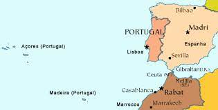

Povos originários e ocupação do território · Acontecimento 06 de 08
A chegada dos açorianos e madeirenses a Santa Catarina
1746–1756

Contexto da imigração
A migração para o sul do Brasil não surgiu do nada. Um estudo sobre as origens da emigração açoriana observa que o edital de 1746 não pode ser entendido como um ato isolado, destinado a resolver uma crise. Já no fim do século XVII, o governador da Colônia do Sacramento pedia ao rei que enviasse povoadores para lá.
Do lado das ilhas, a pressão vinha do excesso de gente. Segundo um artigo da UFRGS, em 1746 uma representação açoriana pediu ao rei autorização para emigrar para as possessões ultramarinas, a fim de aliviar a superpopulação das ilhas. O mesmo trabalho aponta que a dificuldade de acesso à terra e as crises de carestia tornavam a situação insustentável para muitos.
A Coroa, porém, tinha seus próprios objetivos. Os historiadores concordam que, embora os açorianos tenham pedido a transferência, foi a Coroa que determinou o destino e a finalidade da mudança. O interesse português pelo sul do continente era estratégico: as terras meridionais eram disputadas com a Coroa espanhola, o que deu início à chamada “política de casais”. Esse interesse se intensificou com o Tratado de Madri, já que era preciso resguardar as fronteiras em definição.
Na própria Ilha de Santa Catarina, a ocupação teve motivação estratégico-militar, e não econômica. A Capitania havia sido criada pela Provisão Régia de 11 de agosto de 1738, e seu primeiro governante foi o brigadeiro José da Silva Paes.
O edital de 1746
O documento é citado na literatura como o Edital de Sua Majestade, de 31 de agosto de 1746. Segundo um estudo da UFSC, a Coroa o elaborou para estimular famílias açorianas jovens e numerosas a emigrarem para o sul do Brasil.
Há também referência a um edital específico para a passagem dos casais à Ilha de Santa Catarina, que um artigo da UFRGS data de 1747. Esse texto estabelecia as condições da migração e as concessões do governo português. Entre as promessas, uma historiadora da UFSC lembra o transporte gratuito até o Brasil.
A chegada dos primeiros imigrantes (1748–1756)
Os primeiros casais desembarcaram em Desterro, na Ilha de Santa Catarina, em 6 de janeiro de 1748. Os números do primeiro contingente variam conforme a fonte. O Núcleo de Estudos Açorianos da UFSC fala em 256 pessoas. Já a carta do governador Silva Paes ao rei, de 24 de fevereiro de 1748, menciona 161 pessoas oriundas da Ilha Terceira e adjacentes.
O total do período também é impreciso. Estimativas falam em cerca de 5.000 pessoas ou 4.500, enquanto outras apontam mais de 6.000 entre 1748 e 1756. O Governo dos Açores cita cerca de 6.000 açorianos e meia centena de madeirenses nesse intervalo.
A travessia e a acolhida foram difíceis. O transporte se mostrou penoso desde cedo, o que revelava o abandono por parte da autoridade real. Silva Paes e seu sucessor, Manoel Escudeiro Ferreira de Souza, mostraram-se despreparados para receber o contingente de recém-chegados.
Distribuição das terras e formação das comunidades
Na carta de fevereiro de 1748, o governador informava ao rei que havia distribuído algumas léguas de terra e mandado fornecer mantimentos aos casais. Segundo um estudo da UFSC, a distribuição foi feita primeiro em torno da vila de Nossa Senhora do Desterro e depois em direção às extremidades norte e sul da ilha.
As promessas do edital jamais se concretizaram por inteiro. Um estudo sobre Santo Antônio de Lisboa registra desigualdade na distribuição de terras e áreas que nunca foram distribuídas.
O resultado foi a multiplicação de núcleos. O Governo dos Açores contabiliza seis novas freguesias em apenas oito anos (1748–1756), número que, segundo ele, supera em 100% o de todos os 150 anos anteriores. Entre elas estão Santíssima Trindade, Lagoa da Conceição, Santo Antônio de Lisboa, São João do Rio Vermelho, Canasvieiras e Ribeirão da Ilha. O bairro da Trindade, por exemplo, tem sua formação ligada à distribuição das primeiras levas de açorianos e madeirenses pela ilha.
Parte dos migrantes seguiu adiante. Por causa do Tratado de Madri, um número considerável foi realocado para o povoamento do Rio Grande de São Pedro.
Economia, trabalho e condições de vida
A economia era de subsistência. Segundo um estudo publicado pela PUC Minas, os colonos, em terras desconhecidas, estavam condenados a um trabalho de subsistência, pois não tinham mercado consumidor para sua produção. O trigo, base da alimentação nas ilhas, foi substituído pela mandioca. Segundo reportagem da Agência FAPESP, os açorianos adotaram, no início, técnicas de processamento de trigo e cevada dos engenhos de farinha europeus.
Além da lavoura, a pesca ganhou importância. Uma publicação do Idec observa que os açorianos já estavam habituados a pescar em grandes penhascos e não tiveram grandes problemas no litoral catarinense.
O artesanato também aparece nas fontes. Entre as atividades herdadas do período constam redes, tarrafas, renda de bilros, farinha de mandioca, aguardente de cana e cestaria. Há registro de que, após a chegada dos colonos, a ilha passou a florescer em habitantes, agricultura e até indústria manufatureira.
Transformações culturais e identidade litorânea
A cultura açoriana se misturou ao que já existia na terra. Uma publicação do Idec registra que as canoas e o modo de pesca artesanal são influências diretas dos povos originários. A mandioca ganhou lugar central na mesa, e a farinha de Santa Catarina, segundo o mesmo texto, tem características próprias: é mais fina e polvilhada.
Também no urbanismo as mudanças em Desterro, segundo relatos de viajantes, passaram a ocorrer de fato com a chegada dos açorianos.
Essa herança nem sempre foi valorizada. Um artigo da UFSC lembra que até o século XX a cultura açoriana esteve desvalorizada em razão de um conflito de poder. Hoje, o discurso da “açorianidade” é usado para representar o município de Florianópolis, que o Portal da Açorianidade associa a isolamento e insularidade.
Permanências e legado
Segundo o Núcleo de Estudos Açorianos da UFSC, existem hoje 1,3 milhão de descendentes diretos dos primeiros açorianos apenas em Santa Catarina.
O patrimônio material também resiste: Santo Antônio de Lisboa conserva até hoje um conjunto bastante homogêneo e íntegro de edificações típicas da época. O impacto demográfico do período, segundo o mesmo estudo, influiu sobremaneira no desenvolvimento da região.
Fontes
As fontes e endereços abaixo ficam registrados como texto, sem hiperlinks.
- Universidade de Coimbra — nota sobre os primórdios da emigração açoriana.
https://dl.uc.pt/bitstream/10316.2/40456/1/nota_sobre_os_primordios_da_emigracao_acoriana.pdf - UFRGS, revista Aedos — artigo “Do Arquipélago ao Continente”.
https://seer.ufrgs.br/index.php/aedos/article/view/10584/6224 - UFRGS, revista Aedos — versão em PDF do artigo sobre emigração açoriana.
https://seer.ufrgs.br/index.php/aedos/article/download/10584/6225/34655 - UFRGS, revista Em Questão — material sobre o edital e a passagem dos casais.
https://seer.ufrgs.br/index.php/EmQuestao/article/download/106467/58838/445886 - Agência FAPESP — “Cultura de base açoriana”.
https://agencia.fapesp.br/cultura-de-base-acoriana/1053 - ANPUH — trabalho sobre as estimativas da imigração.
https://anpuh.org.br/uploads/anais-simposios/pdf/2019-01/1548856591_eb9a25ed1cd080aa68c614f29e193ae1.pdf - CORE — estudo citado sobre transporte e distribuição de terras.
https://core.ac.uk/download/303970679.pdf - Estudo sobre a distribuição de terras em Santa Catarina.
https://agora.emnuvens.com.br/ra/article/download/387/pdf/1421 - UFSC — estudo sobre a distribuição de terras.
https://periodicos.ufsc.br/index.php/revistacfh/article/download/23810/21366/77461 - UFSC, revista Katalysis — estudo sobre Santo Antônio de Lisboa.
https://periodicos.ufsc.br/index.php/katalysis/article/download/5404/4765/16921 - Governo dos Açores — “State of Santa Catarina”.
https://www.azores.gov.pt/Portal/en/entidades/srapre-drcomunidades/textoImagem/State+of+Santa+Catarina.htm - UFRGS, revista Aedos — material sobre a migração para o Rio Grande de São Pedro.
https://seer.ufrgs.br/index.php/aedos/article/download/83403/49792/355940 - PUC Minas — estudo sobre economia de subsistência.
https://periodicos.pucminas.br/Arquiteturaeurbanismo/article/download/P.2316-1752.2014v21n29p104/10272/46910 - Idec — publicação sobre cultura e práticas açorianas.
https://idec.org.br/node/30312 - UFSC, Revista Santa Catarina em História — artigo sobre a cultura açoriana.
https://ojs.sites.ufsc.br/index.php/sceh/article/view/1498/1032 - Portal da Açorianidade — material sobre comunidades açorianas.
https://portaldaacorianidade.azores.gov.pt/comunidadesacorianas/wp-content/uploads/2021/09/46-13-pt-20080918130113b4aa.pdf